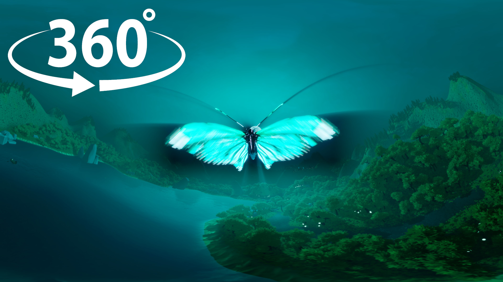
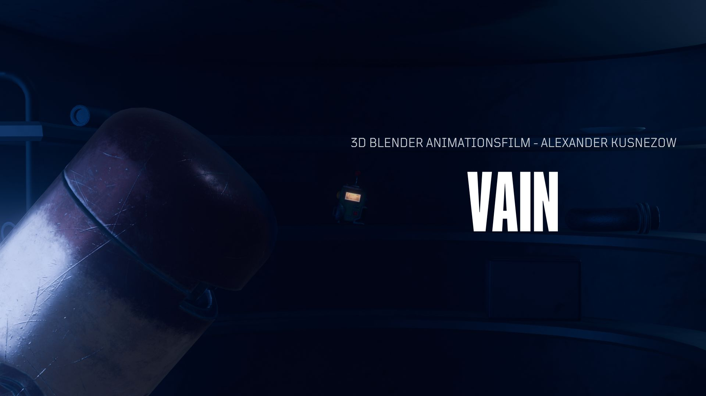
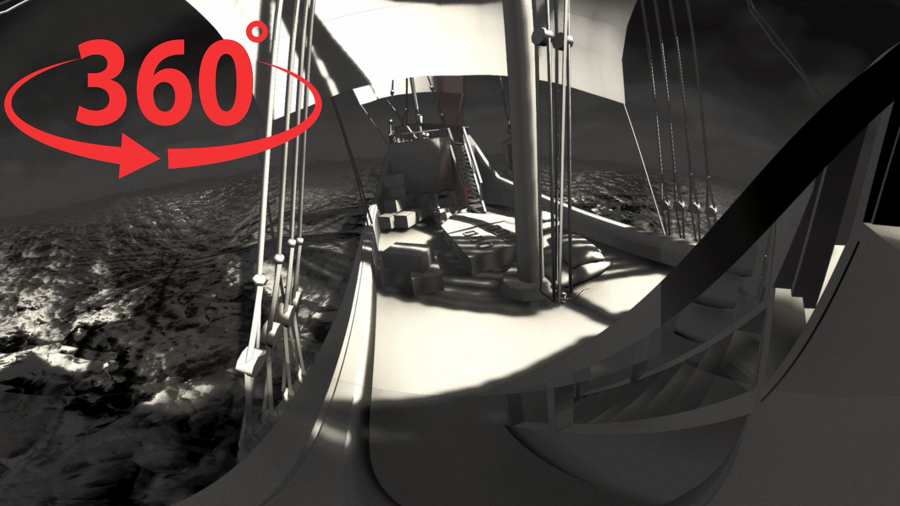
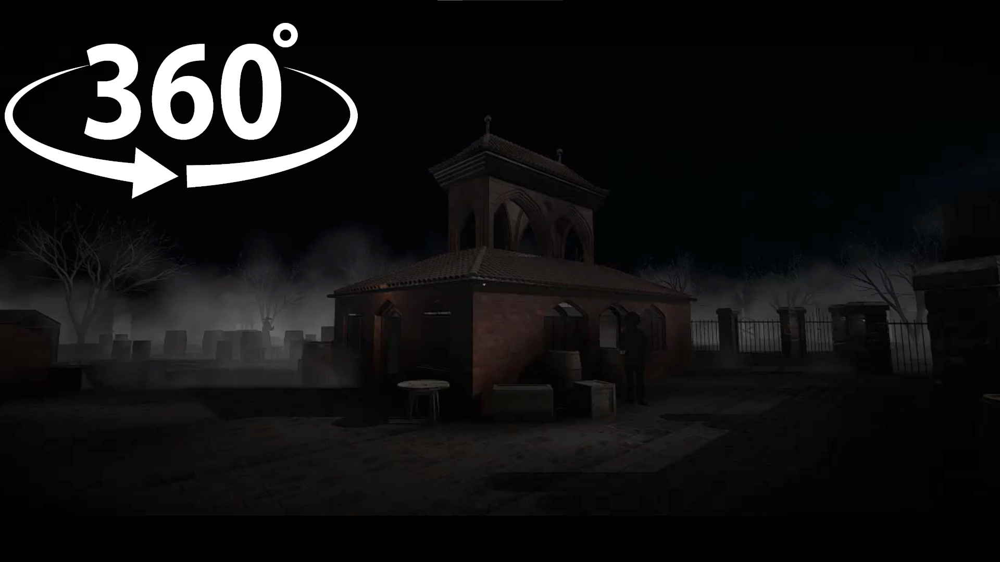
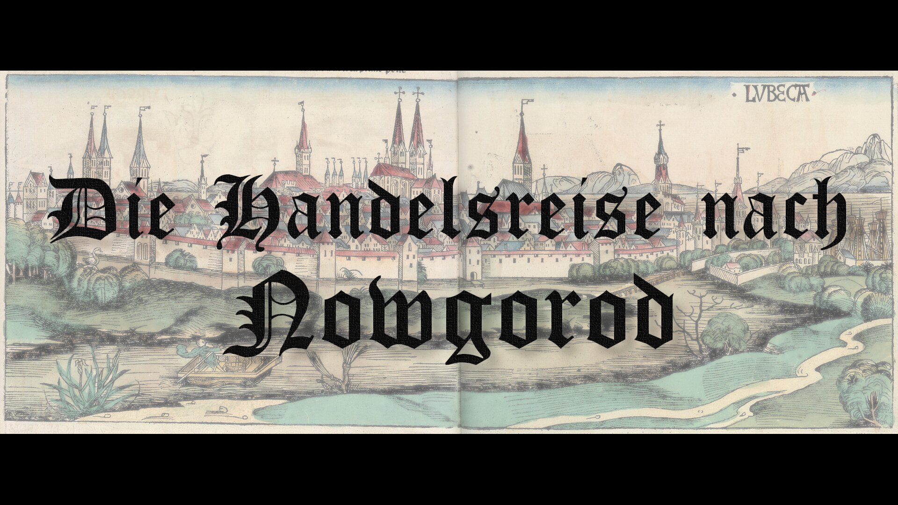

Immersive Experience: Die Sage vom Roggenbuk
Ein interaktiver VR-Kurzfilm für Grundschüler, der Storytelling mit modernem E-Learning verbindet. Entwickelt in der Unreal Engine, fokussiert sich das Projekt auf maximale Immersion und den Wissenstransfer durch virtuelles Erleben.
Tools: Unreal Engine 5.4, Blender, Mixamo & ActorCore AccuRIG, Tencent Hunyuan 3D, Adobe Premiere Pro & After Effects, Gimp, ChatGPT.

3D-Kurzfilm: VAIN
Ein atmosphärischer Animationsfilm in einer postapokalyptischen Welt. Das Projekt konzentriert sich auf Environment Design und Lighting in Blender, um globale Themen durch visuelles Storytelling zu vermitteln.
Tools: Blender, Adobe Premiere Pro, Adobe After Effects, 3D-Animation.

Digitale Rekonstruktion: Die Lisa von Lübeck
Für eine 360°-Kuppelprojektion konzipiert, rekonstruiert dieser Kurzfilm ein mittelalterliches Handelsschiff. Der Fokus lag auf historischer Detailtreue und der technischen Umsetzung für immersive Full-Dome-Umgebungen.
Tools: Blender, Unity, 3D-Modellierung.

3D-Visualisierung: Der Kaak
Animation und Modellierung eines historischen Prangers für eine 3D-Kuppelprojektion. Ziel war die Kombination aus musealer Wissensvermittlung und hochwertiger 3D-Animation in Unity.
Tools: Blender, Unity, Adobe Premiere Pro, 3D-Animation.

3D-Animationsfilm: Die Handelsreise nach Nowgorod
Eine filmische Zeitreise durch historische Handelsrouten. In diesem Projekt wurde eine virtuelle Kirche als Bühne für ein erzählerisches 3D-Erlebnis genutzt, um Geschichte visuell greifbar zu machen.
Tools: Blender, Adobe Fresco, Adobe Premiere Pro, Storytelling.